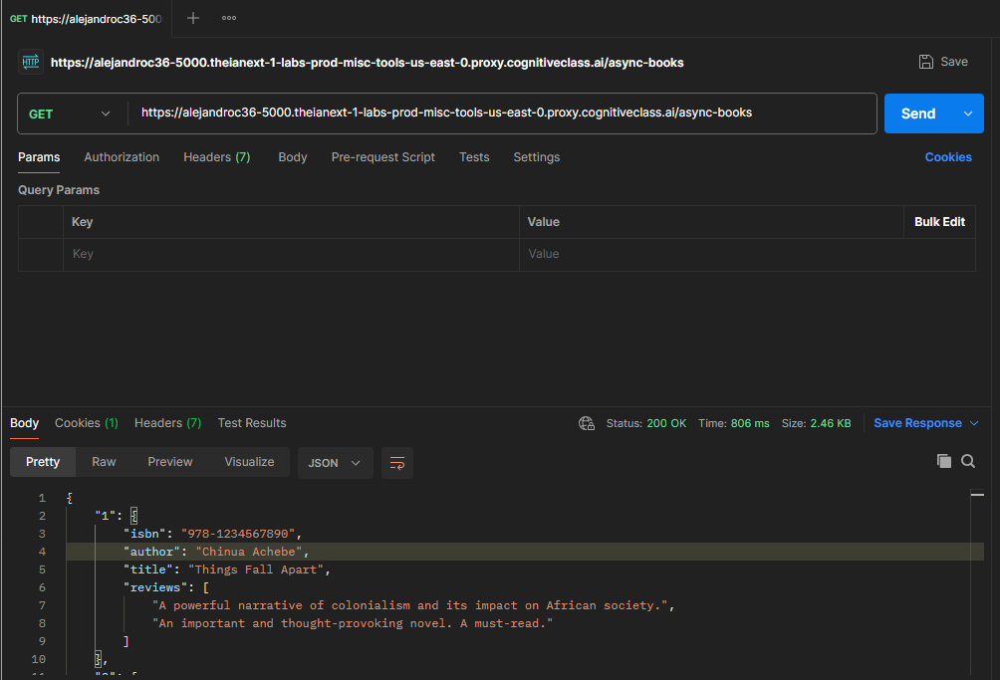
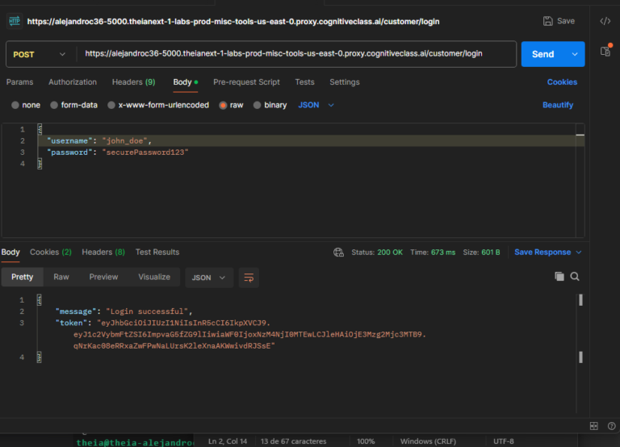
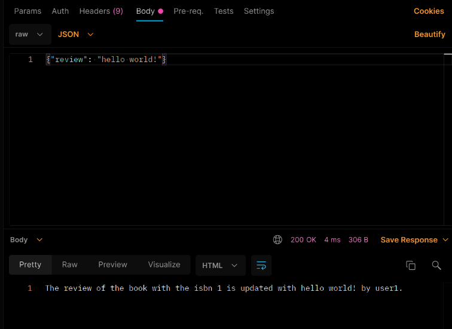

Backend Development: Online Book Review Application
This project showcases the development of an online book review application, allowing users to explore and review books through a structured system. The goal was to create an intuitive and user-friendly platform where users could search for books by title, author, or genre and access relevant information stored in a database.
Highlights
- The website dynamically retrieves and displays book titles, descriptions, and user reviews, helping readers discover new books and make informed reading choices.
- The system ensures a smooth and secure user experience, leveraging backend technologies for user authentication, review submissions, and efficient data management.
Most Important Tools Used
Express.js
JavaScript
JSON
JWT Authentication
Postman
Node.js
My Role in the Project
I was responsible for the end-to-end development of this project, including:
- ✔️ Designing and implementing the backend architecture to support seamless book reviews and user interactions.
- ✔️ Developing the database schema and managing data storage to ensure efficient handling of book details, user accounts, and reviews.
- ✔️ Creating and securing API endpoints for user authentication, book search, and review submissions.
- ✔️ Implementing server-side logic with Node.js and Express.js to handle requests and responses efficiently.
- ✔️ Optimizing the backend performance for scalability, security, and fast response times.

Key Learnings
- Designing and managing a scalable database schema for efficient data storage and retrieval.
- Building and securing RESTful APIs to handle user authentication, book search, and reviews.
- Implementing server-side logic with Node.js and Express.js to manage requests and responses efficiently.
- Optimizing backend performance, ensuring fast response times and secure data handling.
- Enhancing application security by implementing authentication and authorization mechanisms.
Understanding Brief
Research
Design Process
The objective was to develop an online book review application where users could search for books, read and write reviews, and interact with other readers. The platform needed to include a search bar, user authentication, and a structured database to ensure efficient book retrieval and review management.

Technical Implementation

✅ Node.js & Express.js: Backend framework for server-side logic and API routing.
✅ MongoDB: Stores book details, reviews, and ratings.
✅ JWT Authentication: Secures user login and sessions.
✅ RESTful API: Manages book searches, reviews, and authentication.
Final Impact & Takeaways
This project effectively demonstrates my ability to develop a fully functional and dynamic backend application using Node.js, Express.js, and MongoDB. The integration of user-generated book reviews and ratings enhances the platform’s interactivity, providing a seamless experience for book enthusiasts. The final product is a lightweight, interactive, and scalable online book review application, showcasing both backend development skills and database management in a real-world scenario.
— End of project —